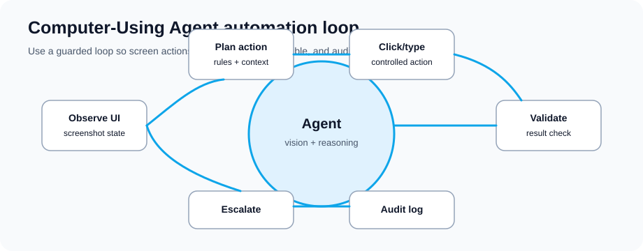

Computer-Using Agents and Robotic Process Automation
Plan desktop and web automation with the right machines, credentials, and supervision.
Plan desktop and web automation with the right machines, credentials, and supervision.
Computer use in Microsoft Copilot Studio lets an agent interact with a configured Windows computer by using a virtual mouse and keyboard. Microsoft positions it for websites and desktop apps where no direct API or connector exists.
The useful part is that the model can look at a screen, decide the next step, type values, check the result, and stop for human supervision when the task is risky or unclear.

| Aspect | Traditional RPA | Computer-Using Agents |
|---|---|---|
| Adaptation | Breaks if UI changes; needs code updates | Can tolerate some UI changes; still needs testing and monitoring |
| Setup Time | Weeks of development per process | Hours to weeks depending on instructions, machine setup, credentials, and exceptions |
| App Support | Only apps with available APIs/connectors | Many websites and Windows desktop apps; some app types and virtualized environments may not be supported |
| Decision Making | Rule-based (if/then logic) | Model-driven, with human review for risky choices |
| Error Handling | Requires explicit error handlers | Agents can retry or escalate, but high-risk paths need explicit supervision |
| Skill Transfer | Requires RPA developer expertise | Makers can configure tools with clear instructions and admin review |
Process: Intake form → extract data → fill into CRM → verify in system
What good looks like: Less rekeying, fewer copy-paste mistakes, and humans focused on exceptions.
Process: Pull data from old mainframe system → transform → load into modern cloud app
Challenge: No APIs available on legacy system
Solution: CUA reads legacy terminal interface, navigates screens, extracts data, loads to cloud
What good looks like: The legacy process keeps moving while a better API or modernization path is planned.
Process: Invoice received → extract line items → match to PO → approve/reject → post to GL
Current state: Manual validation and data entry across several screens
Assisted: Agent handles routine fields while humans review exceptions
What good looks like: Shorter cycle time and better audit evidence without removing approval controls.
Process: Support ticket received → look up customer in CRM → check history → apply solution → document resolution
Agent role: Handles repeatable steps and escalates when the path is unclear
What good looks like: Better first-contact resolution for repeatable issues and a cleaner resolution record.
Process: New hire onboarding → provision accounts → set up benefits → send welcome documentation
Traditional: Multiple systems and manual coordination
Assisted: Agent handles repeatable setup steps and escalates identity or access exceptions
What good looks like: More consistent onboarding while manager and IT approvals stay in place.
Process: Monthly compliance check → audit all systems → generate report → flag exceptions
Agent role: Runs repeat checks and flags exceptions early
What good looks like: Exceptions are found earlier and evidence is ready for audit review.
Event Trigger (Schedule, API call, email, etc.)
↓
Copilot Studio Agent
├─ Vision Module: Reads current screen
├─ Understanding: Interprets UI, identifies elements
├─ Decision Engine: Determines next action
├─ Action Executor: Clicks, types, navigates
└─ Error Handler: Detects/recovers from failures
↓
Application 1 (Desktop/Web/Legacy)
Application 2 (Cloud SaaS)
Application 3 (Database)
↓
Data Output
├─ Results logged in audit trail
├─ Data stored in cloud database
├─ Results sent via API/email
└─ Dashboard updated
Computer use can tolerate some UI changes because it uses vision and reasoning, but you should still retest when forms, buttons, navigation, or login flows change.
Yes — a single agent can open App A, extract data, switch to App B, paste data, run query in App C, all in one workflow.
Accuracy depends on the app, instruction quality, input variability, credential flow, and exception handling. Measure accuracy in your pilot and route low-confidence cases to humans.
Computer use runs on the machine you configure for the tool. Use dedicated, managed machines for production automation and confirm availability, patching, and monitoring before scheduling runs.
Simple processes can be prototyped quickly, but production readiness depends on security review, test data, exception coverage, monitoring, and support ownership.
Use least-privilege credentials, stored secrets, access allow lists, dedicated machines, logging, and human supervision. Compliance depends on your design, tenant controls, data types, and audit process.
Yes — agent can be trained on decision rules. If confidence is low, agent escalates to human for review rather than guessing.
Before building, check the current Microsoft docs for computer use setup, billing, model options, machine configuration, and supervision.
Download our RPA and Computer-Using Agent implementation guide with case studies and ROI calculator.
Get RPA Implementation Guide